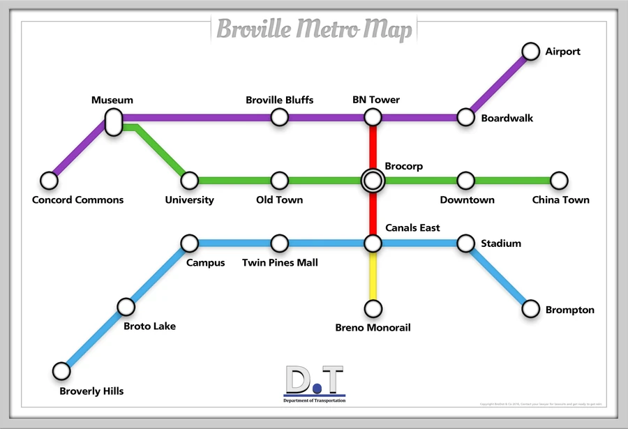

Broville Subway
The subway network crosses downtown, the canals, the university, and the airport. Museum, Brocorp, BN Tower, and Canals East are interchange points on the v11 diagram.

Lines on the v11 diagram
The Department of Transportation map indicates stop order and interchanges; the distances shown are schematic.
- Purple — Concord Commons → Museum → Broville Bluffs → BN Tower → Boardwalk → Airport.
- Green — Museum → University → Old Town → Brocorp → Downtown → China Town.
- Red — BN Tower → Brocorp → Canals East.
- Blue — Broverly Hills → Broto Lake → Campus → Twin Pines Mall → Canals East → Stadium → Brompton.
- Yellow — connection between Canals East and the Breno Monorail.



Where to change lines
Museum connects Purple and Green. BN Tower connects Purple and Red. Brocorp connects Green and Red. Canals East brings together Red, Blue, and the Yellow connection.
Formation of the v10 network
The underground subway in v10 is described as a response to the need for fast access from West Broville to the city, as industry expanded in the business districts following the arrival of BroCORP. Its construction is associated with the Great Fire of Broville.
Stalls in each station sold return tickets for one BroBuck. The description from that period presents the subway as the city's only public transport, carrying more than a million passengers a year and earning almost 300,000 dollars from tourist ticket sales alone. These figures and the claim of exclusivity belong to the description of v10, rather than a count of the v11 network.
Named stations and other networks
The historical v11 list also names Boardwalk Station, Boss Station, University Square Station, Broville Heights Station, Recreation Center Station, Mall Station, Elevated Station, Bro Street Station, and Concord Commons. It records station names without resolving all their correspondences with the stops on the diagram.
The Black Line is documented by signs and community accounts. The regional railway has its own map and serves a different scale of travel.
See also
Sources and references
- v11.4.4 maps, signs, books and items World records
- Subways · Broville Wiki Community archive
- Broville Metro Map · Department of Transportation Cartography
Text adapted and expanded from Subways (contributors and history, revision 4940). Adapted text is available under CC BY-SA 3.0.